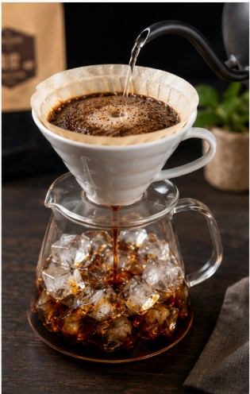
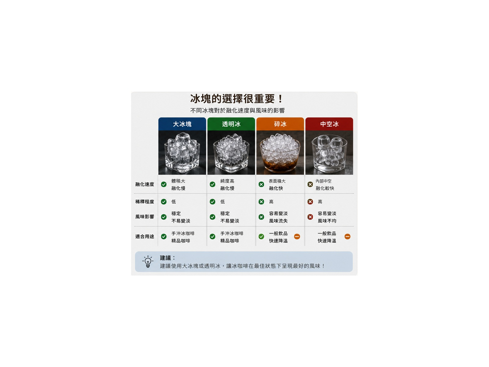

⚡
日本急冷法
香氣清楚、酸甜明亮、口感乾淨，最適合表現精品豆的產區特色。
以熱水萃取，再讓咖啡液直接滴落在冰塊上快速降溫。

冰咖啡若只是把一般熱咖啡放涼後再加冰，容易因氧化與稀釋而失去香氣。 急冷法則利用熱水快速萃取咖啡的芳香物質，再由冰塊立即降溫， 可保留較清楚的花香、果香、酸質與甜感。
不同方式會帶來完全不同的香氣、酸質與口感。
香氣清楚、酸甜明亮、口感乾淨，最適合表現精品豆的產區特色。
長時間低溫浸泡，酸感較低、口感圓潤，常呈現巧克力與糖漿感。
操作最快，但若未提高濃度，常因冰塊融化而變淡，香氣也較容易流失。
| 方式 | 香氣 | 甜感 | 酸質 | 口感 | 適合情境 |
|---|---|---|---|---|---|
| 日本急冷法 | ★★★★★ | ★★★★☆ | ★★★★☆ | 清爽明亮 | 精品豆、花果香豆 |
| 冷泡法 | ★★★☆☆ | ★★★★★ | ★★☆☆☆ | 圓潤滑順 | 大量製作、日常飲用 |
| 熱沖後加冰 | ★★☆☆☆ | ★★★☆☆ | ★★★☆☆ | 視濃度而定 | 快速沖煮 |
器材不必複雜，但電子秤、磨豆機與冰塊品質非常重要。
V60、扇形濾杯或平底濾杯皆可。
同時測量熱水量、冰塊量與沖煮時間。
幫助控制水柱粗細與注水位置。
研磨均勻度會直接影響萃取與甜感。
建議將水溫控制在 87～92°C。
冰塊應無異味、質地硬、融化速度慢。
先放入冰塊，承接萃取完成的咖啡液。
完成後攪拌，使咖啡濃度與溫度一致。
適合一杯約 280～300 ml 的冰手沖咖啡。
注水穩定、萃取均勻，比追求過多段數更重要。
先潤濕濾紙、倒掉洗紙水，再於分享壺中放入 120 g 冰塊。
由中心向外小圈注水，確保所有咖啡粉均勻濕潤並充分排氣。
使用細而穩定的水柱，小範圍繞圈，避免直接沖刷濾紙邊緣。
保持粉床水位穩定，總時間控制在約 2:00～2:30，完成後輕輕攪拌。
焙度越深，通常需要較低水溫與較粗研磨，減少苦澀與乾燥感。
| 焙度 | 建議水溫 | 研磨 | 風味方向 | 調整重點 |
|---|---|---|---|---|
| 淺焙 | 91～92°C | 中偏細 | 花香、柑橘、莓果 | 提高萃取，避免尖酸 |
| 中焙 | 89～91°C | 中細 | 焦糖、堅果、熟果 | 追求酸甜平衡 |
| 深焙 | 87～89°C | 中粗 | 巧克力、焦糖、堅果 | 降低苦味與焦澀感 |
冰塊同時決定降溫速度、稀釋程度與成品乾淨度。
大顆、密實、無異味的冰塊。使用過濾水製冰，可減少氯味與冰箱雜味。
碎冰、中空冰或已吸附冰箱味的冰塊，因為融化太快，容易造成咖啡水薄。

先一次只調整一個變因，才能找出真正原因。
冰咖啡的甜感來自均勻萃取，而不是單純提高濃度。
選擇養豆完成、香氣仍活躍的咖啡豆。
減少粉床擾動，讓萃取更均勻。
冰塊約占總水量 35～40%，較容易兼顧濃度與冰涼感。
時間過短容易酸薄，過長則容易苦澀。
讓上層濃咖啡、下層融冰水與溫度完全均一。
依序完成，能有效降低忘記冰塊或比例錯誤的情況。
依咖啡豆、濾杯與個人口味微調，沒有唯一固定答案。
低溫會降低苦味與部分甜味感受，使酸質更突出。若酸味尖銳，可將研磨調細、提高水溫或延長沖煮時間。
急冷法建議先放，讓剛萃取出的高溫咖啡立即降溫，減少香氣流失與持續氧化。
可以。建議降低水溫、研磨略粗，並縮短沖煮時間，以降低焦苦與乾澀感。
急冷法以熱水快速萃取，香氣與酸質較清楚；冷泡以低溫長時間浸泡，口感較圓潤、酸感較低。
花香、柑橘、莓果、熱帶水果與乾淨甜感明顯的淺焙至中焙咖啡豆，通常特別適合急冷法。
請將圖片放在本網頁同層的 images 資料夾。
images/iced-coffee-hero.jpgimages/iced-coffee-flash-brew.jpgimages/iced-coffee-ice-comparison.jpg
實際沖煮結果仍會受到咖啡豆、磨豆機、濾杯與水質影響。